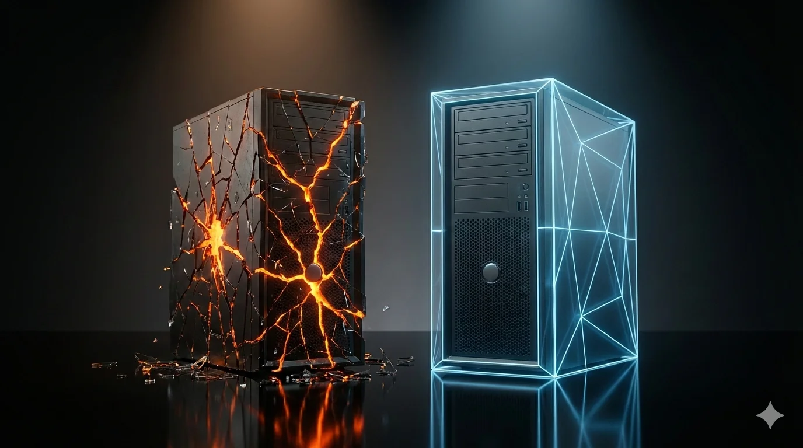

On Sunday, Sam Altman announced that Peter Steinberger, creator of the viral open-source agent OpenClaw, is joining OpenAI to “drive the next generation of personal agents.” [1] The project itself — formerly Clawdbot (renamed after Anthropic threatened legal action), then Moltbot, then OpenClaw — will live as an open-source foundation. [2] OpenAI will “continue to support” it.
The tech press covered it as an aggressive talent win. I see it differently. This is a company with a broken agent track record, paying for community traction it couldn’t build internally. And the security reality of what OpenAI just put its name behind should terrify every enterprise buyer who’s paying attention. Here’s why I think this hire tells you more about OpenAI’s weaknesses than its strengths — and why Anthropic is pulling away.
OpenAI’s Agent Graveyard
Before we evaluate what OpenAI just acquired, let’s inventory what they’ve already tried.
The GPT Store (January 2024).Launched late after the Altman board drama, it was supposed to be the “App Store for AI.” TechCrunch reported that the store was flooded with spam — bizarre, potentially copyright-infringing GPTs that implied minimal moderation effort. [3] Wired documented that revenue-sharing was reserved for a tiny number of creators in an invite-only US pilot program; most developers were excluded. [4] The GPT Store has largely faded from view, with developers widely reporting that custom GPTs break with every model upgrade.
Operator (January 2025).A cloud-based browser agent that navigates websites on your behalf. The concept is sound. The execution was shaky. When the Washington Post’s Geoffrey Fowler tested it for finding cheap eggs, Operator made an unauthorized $31 Instacart purchase — the exact kind of failure that makes enterprise procurement teams walk away. [5] OpenAI’s own system card acknowledged the agent “struggled to properly perform optical character recognition” and would get stuck in compounding error loops. [6]
AgentKit (February 2026).A visual canvas for multi-agent workflows, just launched. [7] Too early to judge, but entering a crowded field where Anthropic’s MCP protocol already has ecosystem traction.
Three distinct agent strategies in two years. None has generated meaningful enterprise adoption. OpenAI’s consumer flywheel hasn’t translated into agent dominance.
What OpenAI Actually Got
OpenClaw is impressive as a consumer phenomenon. Over 179,000 GitHub stars. Two million visitors in a single week. [8] It runs locally, connects to WhatsApp, Telegram, Discord, and iMessage, and acts as a persistent personal AI agent. [9] Baidu plans to integrate it into its main smartphone app. [2] The community energy is real.
But look closer. Steinberger described the project as a “playground” in his own announcement. [10] It’s been rebranded twice in weeks to escape trademark disputes and crypto scammers. [2] And the ecosystem’s flagship social platform, Moltbook — where 1.5 million “agents” supposedly gathered — was exposed by Wiz researchers as being controlled by just 17,000 human accounts, an 88-to-1 bot-to-human ratio, running on a vibe-coded Supabase backend with no Row Level Security that exposed 1.5 million API keys, 35,000 email addresses, and thousands of private messages to anyone who looked. [11] The founder admitted he didn’t write a single line of code. [12]
OpenAI didn’t acquire a product. It acquired a GitHub star count and the developer who created it.
The Security Catastrophe
Every major cybersecurity vendor has now published analyses, detection tools, or removal guides for OpenClaw. Not advisories about theoretical risks — active response to deployments already in the wild.
The exposed instances.Security researcher Maor Dayan found more than 42,000 OpenClaw instances exposed on the public internet, with 93% exhibiting critical authentication-bypass vulnerabilities. [13] Bitdefender’s separate analysis identified 135,000 exposed instances over a two-week scanning period, many originating from corporate IP space — the number grew so rapidly that it tripled from 40,000 to over 135,000 within hours of SecurityScorecard’s initial publication, per The Register. [14] [15] The architectural flaw is fundamental: OpenClaw binds to 0.0.0.0 on port 18789 by default—listening on all network interfaces and accessible from the public internet unless explicitly restricted. Bitdefender described this as “fundamentally flawed under secure-by-design principles.” [15]
The one-click kill chain.CVE-2026-25253, rated CVSS 8.8, demonstrated that visiting a single malicious webpage was enough to compromise an OpenClaw installation — even one running only on localhost. The vulnerability exploited a logic flaw where OpenClaw’s Control UI accepted a gateway URL from a query string and automatically established a WebSocket connection, transmitting the user’s authentication token to the attacker without confirmation. [16] The attacker could then use the stolen token to disable sandbox protections and safety guardrails via the API, achieving full remote code execution within milliseconds. [17] Belgium’s Centre for Cybersecurity issued a formal advisory. [18] The vulnerability was patched in late January, but it revealed something more fundamental: OpenClaw’s safety features were managed via the same API that a compromised token could control.
The lethal trifecta.Sophos articulated the core architectural problem: OpenClaw simultaneously has access to private data, can communicate externally, and is exposed to untrusted content. [19] The practical result? A prompt injection attack can be as simple as emailing an OpenClaw-controlled inbox with instructions to exfiltrate credentials. Anyone who can message the agent effectively inherits the agent’s permissions — bypassing MFA and network segmentation in a single step. [19]
The supply chain attack — already in progress.This isn’t theoretical. Koi Security audited all 2,857 skills on ClawHub, OpenClaw’s modular extension marketplace, and found 341 malicious entries — 335 from a single coordinated campaign they dubbed ClawHavoc. [20] The malicious skills distributed the Atomic Stealer malware through fake prerequisite installation instructions targeting both macOS and Windows systems. The campaign included typosquatting variants of the official ClawHub CLI, fake cryptocurrency tools, YouTube utilities, and auto-updaters, resulting in a 12% contamination rate across the entire marketplace. [20] Separately, Snyk audited OpenClaw's skill code quality and found that 36% contained security flaws—not malicious intent, but sloppy code with exploitable vulnerabilities such as poor input validation and hardcoded secrets. [21] A CISO looking at ClawHub sees an extension marketplace where one in eight skills is actively hostile and another quarter is exploitable.
The Shadow AI problem.Bitdefender’s enterprise telemetry found employees deploying OpenClaw agents directly onto corporate machines using one-line commands, granting broad terminal and disk access. [22] Token Security found 22% of its enterprise customers have employees running OpenClaw without IT approval. Noma reported that 53% of its enterprise customers gave OpenClaw privileged access over a single weekend. [23] This isn’t Shadow IT. This is Shadow AI — and the liability chain is straightforward: an employee installs OpenClaw on a machine with customer data, the agent reads an email containing PII, the agent communicates externally, and the GDPR Article 33 notification clock starts. For European companies selling to financial services customers under DORA, this creates immediate regulatory exposure with no enterprise agreement, data processing addendum, audit logging, or data residency controls to rely on. [13]
CrowdStrike has published an OpenClaw Search & Removal Content Pack. [24] Sophos added PUA protection. [19] Trend Micro built endpoint detection. [25] When security vendors treat your product the way they treat unauthorized software, that’s not a branding problem. That’s an architectural one.
And OpenAI just put its name on it.
The Anthropic Contrast
Anthropic’s Cowork solves the same fundamental problem — giving an AI agent the ability to act on your behalf — but makes opposite architectural choices at every layer. This is not incidental. Anthropic was founded in 2021 by former OpenAI safety researchers — Dario and Daniela Amodei, among them — who left specifically because they believed OpenAI was deprioritizing safety. [26] The architecture reflects the origin.
Cowork runs inside an isolated Linux virtual machine launched via Apple’s VZVirtualMachine framework on macOS, with bubblewrap and seccomp restricting syscalls inside the VM. [27] Only directories explicitly authorized by the user are accessible; network access is disabled or strictly constrained by default; write access is restricted to the working directory. [28] Authentication is handled through a secure proxy with scoped credentials within the sandbox, which translates them into actual tokens outside it—no plaintext credential storage, no API keys in config files. [28]
The prompt injection defenses use reinforcement learning to train Claude to recognize and refuse malicious instructions, plus content classifiers that scan untrusted content entering the context. [27] [29] Anthropic is transparent that prompt injection remains unsolved — they publish failure rates in their system cards, data that OpenAI and Google have not released for their own models. [30]
Cowork is not invulnerable. PromptArmor demonstrated, within days of launch, that attackers could manipulate Claude into exfiltrating files through Anthropic’s own whitelisted API, bypassing sandbox network restrictions. [31] The underlying vulnerability had been reported by researcher Johann Rehberger in October 2025; Anthropic acknowledged it but hadn’t fully remediated it before Cowork shipped. [32] That’s a real security failure, and Anthropic deserves criticism for it. I’ve been critical of Anthropic before — I published an analysis of how MCP, their agent communication protocol, shipped with no authentication, no authorization, and no audit logging, ignoring 40 years of enterprise security lessons. [33] There has been meaningful progress since, but the point stands: Anthropic is not immune to shipping fast and patching later. And Cowork has been in the wild for two months — the full adversarial picture will take longer to develop.
But there’s a structural difference. The PromptArmor vulnerability was a scoped trust-boundary issue in a specific API interaction — identifiable, patchable, and contained within a sandboxed environment. OpenClaw’s problems are architectural: the product’s entire value proposition is maximizing permissions while minimizing constraints. The features that made it go viral are the features that make it insecure. As Aikido Security put it: you can make OpenClaw safer by removing its capabilities, “but then you’ve rebuilt ChatGPT with extra steps.” [34] You can’t patch a design philosophy.
The Enterprise Adoption Data
The market is voting with dollars.
Anthropic’s run-rate revenue hit $14 billion as of February 2026, up from $9 billion at the end of 2025 and $1 billion at the end of 2024. [35] SaaStr noted there is simply no precedent for that trajectory in B2B software. [36] Claude Code alone has run-rate revenue above $2.5 billion, more than doubling since January. Enterprise use accounts for over half of Claude Code’s revenue; customers spending over $100,000 annually grew 7x year over year; eight of the Fortune 10 are Claude customers. [35]
Ramp’s spend-based tracking across 50,000 companies shows that one in five businesses now pay for Anthropic, up from one in 25 a year ago. And 79% of OpenAI customers also pay for Anthropic [36] — enterprises aren’t picking a single winner; they’re going multi-vendor, and Anthropic is consistently the second check they write.
The launch of Cowork’s agentic capabilities triggered a $285 billion rout across software, financial services, and asset management stocks in a single day, per Bloomberg. [37] That market reaction doesn’t prove Anthropic will displace incumbent enterprise software. But it’s evidence that institutional investors now consider it plausible — and they don’t accord the same possibility to OpenAI’s agent offerings.
None of this revenue data proves that enterprises are choosing Anthropic for security reasons. But it proves they’re choosing Anthropic — and the security architecture is what will keep them.
The Strategic Read
A sophisticated reader might think: “OpenAI knows about the security problems. They hired Steinberger to fix them. Give them time.”
The problem is structural, not staffing — and OpenAI’s institutional track record on safety makes “trust us, we’ll fix it” a hard sell.
The charitable read is that OpenAI is building a three-tier strategy: AgentKit for developers, Steinberger’s consumer vision for ChatGPT’s 300 million users, and the existing API for enterprise. But that read requires believing OpenAI will keep OpenClaw’s security problems quarantined from its enterprise reputation — and the Shadow AI data suggests the boundary is already porous. When 53% of enterprise customers give a consumer agent privileged access over a single weekend, the line between “consumer product” and “enterprise liability” has already been erased.
Consider the timeline. OpenAI’s original mission was to build AI that “safely benefits humanity, unconstrained by a need to generate financial return.” As of the company’s 2024 IRS filing — discovered by a Tufts governance scholar reviewing the form in November 2025 — the word “safely” has been deleted. So has “unconstrained by a need to generate financial return.” [38] The mission now reads: “to ensure that artificial general intelligence benefits all of humanity.” Full stop.
This wasn’t a clerical edit. It accompanied a structural conversion to a for-profit public benefit corporation in which the original nonprofit board retained just 26% of equity, while Microsoft holds 27%. [38] It accompanied the dissolution of two consecutive dedicated safety teams: the Superalignment team in May 2024, after co-leads Ilya Sutskever and Jan Leike resigned — Leike publicly stating that “safety culture and processes have taken a backseat to shiny products” — and the Mission Alignment team in February 2026, just 16 months after its creation. [39] [40] And it accompanied a string of high-profile departures: Miles Brundage (AGI Readiness lead), Daniel Kokotajlo (who forfeited equity to speak freely about safety concerns) [41], John Schulman (who left for Anthropic), and most recently Zoë Hitzig, who resigned via a New York Times op-ed citing “deep reservations” about OpenAI’s advertising strategy and the ethics of monetizing an archive built on users’ “medical fears, their relationship problems, their beliefs about God.” [42]
Anthropic is not immune to the same pressures. Mrinank Sharma, head of Safeguards Research, resigned the same week as the OpenAI departures, warning that he had “repeatedly seen how hard it is to truly let our values govern our actions.” [42] But the institutional response differs — Anthropic’s safeguards research function continues, while at OpenAI the equivalent departures were followed by the dissolution of the teams themselves. Anthropic open-sources its sandboxing technology. [27] It shipped Cowork with a known vulnerability, got called out by PromptArmor, and responded with a VM update within days — though Anthropic’s initial response was worse: Rehberger’s October HackerOne report was closed within an hour as out of scope before the company reversed course. [32] That’s not a perfect record. But it’s the record of an organization where safety failures trigger patches rather than team dissolutions.
Now layer on the design contradiction. OpenClaw went viral because it gives an agent unrestricted access to your entire digital life — email, filesystem, terminal, messaging — with minimal friction. Hardening that architecture means adding the permission gates, sandboxing, and credential isolation that Anthropic built from the start. But those constraints are precisely what OpenClaw users are trying to avoid. Every security improvement reduces the product’s core appeal. The design philosophy problem I outlined above isn’t something you staff your way out of — and the company attempting to overcome it has spent the last two years systematically dismantling the internal teams that would have flagged these risks before acquisition.
Anthropic, by contrast, built Claude Code, watched developers stretch it into non-coding workflows, productized that behavior into Cowork in ten days using Claude Code itself to write the code [43] — a velocity that cuts both ways, as the early security disclosures demonstrated — expanded to Windows [44], launched domain-specific agentic extensions, and triggered the stock selloff that shook the software sector. [37] That’s a clean product evolution built on a shared agentic architecture, with security prioritized from the start — imperfect, but iterable.
Anthropic’s revenue trajectory — near-10x annually for three consecutive years — is driven by exactly the kind of trust-sensitive, compliance-conscious enterprise buyers who will never deploy an agent that security vendors publish removal tools for.
One final data point. As this article was being finalized, Axios reported that the Pentagon was threatening to designate Anthropic a “supply chain risk”—a penalty normally reserved for foreign adversaries—for refusing to allow unrestricted military use of Claude. [45] Anthropic insists that mass surveillance of Americans and fully autonomous weapons remain off limits. OpenAI, Google, and xAI have all agreed to allow unrestricted use of their models for unclassified Pentagon work. [45] A senior administration official told Axios: “We are going to make sure they pay a price for forcing our hand like this.” [46]
You can read that as a business risk for Anthropic — losing a $200 million contract is not trivial. Or you can read it as the clearest possible signal of which company’s safety commitments are real and which dissolve under pressure.
OpenClaw is a fascinating experiment in what agentic AI can do when you remove all constraints. Cowork is a demonstration of what it can do when you intentionally engineer the constraints.
Enterprise buyers evaluating vendor trust should draw their own conclusions.
Footnotes
[1] TechCrunch, “OpenClaw creator Peter Steinberger joins OpenAI,” Feb 15, 2026.https://techcrunch.com/2026/02/15/openclaw-creator-peter-steinberger-joins-openai/
[2] CNBC, “OpenClaw creator Peter Steinberger joining OpenAI, Altman says,” Feb 15, 2026.https://www.cnbc.com/2026/02/15/openclaw-creator-peter-steinberger-joining-openai-altman-says.html
[3] TechCrunch, “OpenAI’s chatbot store is filling up with spam,” Mar 20, 2024.https://techcrunch.com/2024/03/20/openais-chatbot-store-is-filling-up-with-spam/
[4] Wired / Slashdot, “OpenAI’s GPT Store has Left Some Developers in the Lurch,” Oct 11, 2024.https://tech.slashdot.org/story/24/10/11/1033247/openais-gpt-store-has-left-some-developers-in-the-lurch
[5] Washington Post, “Is OpenAI’s Operator ready to help in the real world?” Geoffrey A. Fowler, Feb 7, 2025.https://www.washingtonpost.com/technology/2025/02/07/openai-operator-ai-agent-chatgpt/
[6] OpenAI, “Operator System Card.”https://openai.com/index/operator-system-card/
[7] OpenAI, “Introducing AgentKit.”https://openai.com/index/introducing-agentkit/
[8] Decrypt, “OpenClaw Creator Gets Big Offers to Acquire AI Sensation,” Feb 14, 2026.https://decrypt.co/358129/openclaw-creator-offers-acquire-ai-sensation-stay-open-source
[9] Silicon Republic, “OpenClaw founder joins OpenAI to create next-gen personal agents,” Feb 16, 2026.https://www.siliconrepublic.com/business/peter-steinberger-openclaw-moltbot-moltbook-ai-openai-personal-agents
[10] Trending Topics, “OpenClaw Developer Peter Steinberger Joins OpenAI,” Feb 16, 2026. Steinberger describes it as a “playground project.”https://www.trendingtopics.eu/openclaw-developer-peter-steinberger-joins-openai-his-ai-agent-will-stay-open-source/
[11] Wiz, “Hacking Moltbook: AI Social Network Reveals 1.5M API Keys,” Feb 2026.https://www.wiz.io/blog/exposed-moltbook-database-reveals-millions-of-api-keys
[12] IEEE Spectrum, “Moltbook, the AI Agent Network, Heralds a Messy Future,” Feb 16, 2026.https://spectrum.ieee.org/moltbook-agentic-ai-agents-openclaw
[13] CSO Online, “What CISOs need to know about the OpenClaw security nightmare,” Feb 12, 2026.https://www.csoonline.com/article/4129867/what-cisos-need-to-know-about-clawdbot-i-mean-moltbot-i-mean-openclaw.html
[14] The Register, “OpenClaw instances open to the internet present ripe targets,” Feb 9, 2026. Citing SecurityScorecard STRIKE dashboard telemetry.https://www.theregister.com/2026/02/09/openclaw_instances_exposed_vibe_code/
[15] Bitdefender, “135K OpenClaw AI Agents Exposed to Internet,” Feb 2026.https://www.bitdefender.com/en-us/blog/hotforsecurity/135k-openclaw-ai-agents-exposed-online
[16] The Hacker News, “OpenClaw Bug Enables One-Click Remote Code Execution via Malicious Link,” Feb 2026.https://thehackernews.com/2026/02/openclaw-bug-enables-one-click-remote.html
[17] depthfirst, “1-Click RCE To Steal Your OpenClaw Data and Keys (CVE-2026-25253).”https://depthfirst.com/post/1-click-rce-to-steal-your-moltbot-data-and-keys
[18] CCB Belgium, “Warning: Critical vulnerability in OpenClaw allows 1-click remote code execution.”https://ccb.belgium.be/advisories/warning-critical-vulnerability-openclaw-allows-1-click-remote-code-execution-when
[19] Sophos, “The OpenClaw experiment is a warning shot for enterprise AI security,” Feb 12, 2026.https://www.sophos.com/en-us/blog/the-openclaw-experiment-is-a-warning-shot-for-enterprise-ai-security
[20] Koi Security, “ClawHavoc: 341 Malicious Clawed Skills Found by the Bot They Were Targeting,” Feb 2026. Confirmed by SC Media, The Hacker News, eSecurity Planet.https://www.koi.ai/blog/clawhavoc-341-malicious-clawedbot-skills-found-by-the-bot-they-were-targeting
[21] Snyk, “ToxicSkills: OpenClaw Security Audit,” Feb 2026, as reported in IEEE Spectrum, ibid. [12].
[22] Bitdefender, “Technical Advisory: OpenClaw Exploitation in Enterprise Networks,” Feb 2026.https://businessinsights.bitdefender.com/technical-advisory-openclaw-exploitation-enterprise-networks
[23] CSO Online, “OpenClaw integrates VirusTotal malware scanning as security firms flag enterprise risks,” Feb 2026. Citing Token Security and Noma/Gartner data.https://www.csoonline.com/article/4129393/openclaw-integrates-virustotal-malware-scanning-as-security-firms-flag-enterprise-risks.html
[24] CrowdStrike, “What Security Teams Need to Know About OpenClaw,” Feb 2026.https://www.crowdstrike.com/en-us/blog/what-security-teams-need-to-know-about-openclaw-ai-super-agent/
[25] Trend Micro, “Viral AI, Invisible Risks: What OpenClaw Reveals About Agentic Assistants,” Feb 6, 2026.https://www.trendmicro.com/en_us/research/26/b/what-openclaw-reveals-about-agentic-assistants.html
[26] Anthropic, “Company.”https://www.anthropic.com/company
[27] Anthropic Engineering, “Making Claude Code more secure and autonomous.”https://www.anthropic.com/engineering/claude-code-sandboxing
[28] Claude Code Docs, “Security.”https://code.claude.com/docs/en/security
[29] Claude Help Center, “Using Cowork safely.”https://support.claude.com/en/articles/13364135-using-cowork-safely
[30] VentureBeat, “Anthropic published the prompt injection failure rates that enterprise security teams have been asking every vendor for,” Feb 2026.https://venturebeat.com/security/prompt-injection-measurable-security-metric-one-ai-developer-publishes-numbers
[31] PromptArmor, “Claude Cowork Exfiltrates Files,” Jan 15, 2026.https://www.promptarmor.com/resources/claude-cowork-exfiltrates-files
[32] The Register, “Anthropic’s Files API exfiltration risk resurfaces in Cowork,” Jan 15, 2026.https://www.theregister.com/2026/01/15/anthropics_claude_bug_cowork/
[33] Julien Simon, “Why MCP’s Disregard for 40 Years of Enterprise Security Should Worry You,” Substack.https://julsimon.substack.com/p/why-mcps-disregard-for-40-years-of
[34] Aikido Security, “Why Trying to Secure OpenClaw is Ridiculous,” Feb 2026.https://www.aikido.dev/blog/why-trying-to-secure-openclaw-is-ridiculous
[35] Anthropic, “Anthropic raises $30 billion Series G funding,” Feb 12, 2026.https://www.anthropic.com/news/anthropic-raises-30-billion-series-g-funding-380-billion-post-money-valuation
[36] SaaStr, “Anthropic Just Hit $14 Billion in ARR,” Feb 13, 2026.https://www.saastr.com/anthropic-just-hit-14-billion-in-arr-up-from-1-billion-just-14-months-ago/
[37] Bloomberg, “Anthropic AI Tool Sparks Selloff From Software to Broader Market,” Feb 3, 2026.https://www.bloomberg.com/news/articles/2026-02-03/legal-software-stocks-plunge-as-anthropic-releases-new-ai-tool
[38] The Conversation, “OpenAI has deleted the word ‘safely’ from its mission,” Alnoor Ebrahim (Tufts University), Feb 13, 2026.https://theconversation.com/openai-has-deleted-the-word-safely-from-its-mission-and-its-new-structure-is-a-test-for-whether-ai-serves-society-or-shareholders-274467
[39] CNBC, “OpenAI disbands another safety team, as head advisor for ‘AGI Readiness’ resigns,” Oct 24, 2024. Covers Superalignment team dissolution and Leike/Sutskever departures.https://www.cnbc.com/2024/10/24/openai-miles-brundage-agi-readiness.html
[40] WinBuzzer, “OpenAI Disbands Its Mission Alignment Team After Just 16 Months,” Feb 12, 2026.https://winbuzzer.com/2026/02/12/openai-disbanded-mission-alignment-team-16-months-xcxwbn/
[41] Vox, “OpenAI whistleblower resigns, saying the company is ‘reckless,’” Daniel Kokotajlo interview with Kelsey Piper, 2024.https://www.vox.com/future-perfect/2024/10/17/openai-safety-kokotajlo-resign
[42] CNN, “AI researchers are sounding the alarm on their way out the door,” Feb 11, 2026. Covers Hitzig NYT op-ed, Sharma resignation, Platformer mission alignment reporting.https://www.cnn.com/2026/02/11/business/openai-anthropic-departures-nightcap
[43] VentureBeat, “Anthropic launches Cowork,” Jan 13, 2026.https://venturebeat.com/technology/anthropic-launches-cowork-a-claude-desktop-agent-that-works-in-your-files-no
[44] VentureBeat, “Anthropic’s Claude Cowork finally lands on Windows,” Feb 10, 2026.https://venturebeat.com/technology/anthropics-claude-cowork-finally-lands-on-windows-and-it-wants-to-automate
[45] Axios, “Exclusive: Pentagon threatens to cut off Anthropic in AI safeguards dispute,” Feb 15, 2026.https://www.axios.com/2026/02/15/claude-pentagon-anthropic-contract-maduro
[46] Axios, “Exclusive: Pentagon warns Anthropic will ‘pay a price’ as feud escalates,” Feb 16, 2026.https://www.axios.com/2026/02/16/anthropic-defense-department-relationship-hegseth